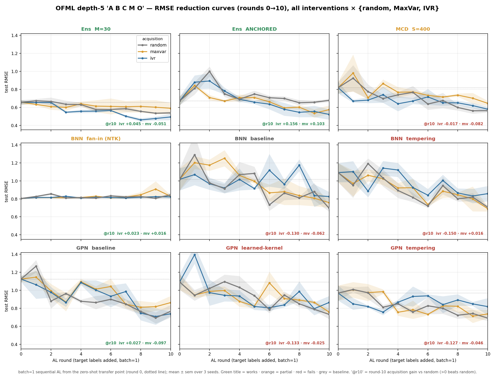
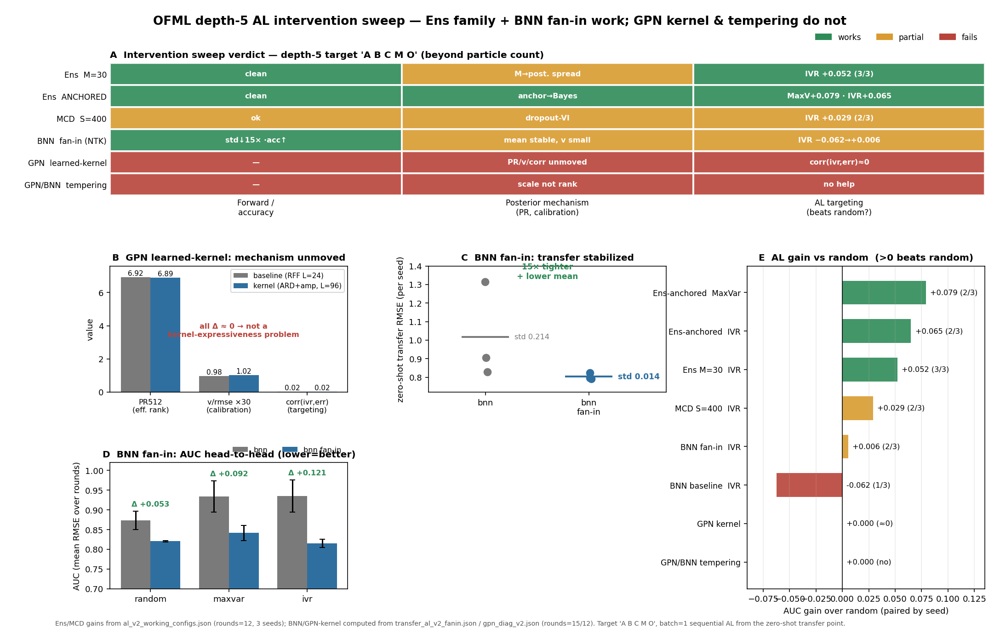

主張 2 · 閉ループ能動学習は非識別的な転移を修復する — 容量が許す限り
A B C M O をゼロショット転移点から閉ループで修復する主張 2 の横断監査。9 種の代理モデル（アンサンブル系・MC ドロップアウト・ベイズ NN・GP-NN）を同一の depth-5 単一 target A B C M O の上で、ゼロショット転移点（WARM=0, round 0）から batch=1 の逐次能動学習に投入し、3 つの獲得則 random / maxvar / ivr をレースさせる。問いは 2 つ：(i) target 終端の能動観測は非識別的な転移を修復して誤差を床から引き剥がすか（定理 3）、(ii) その修復はどの代理でも起きるのか、それとも代理の事後機構が持つ容量に律速されるのか。答えは後者だった — 閉ループ AL は転移を修復するが、代理の事後が使える構造（誤差と相関する分散）を持つ「容量が許す限り」において。中心のコスト指標比較は 図 2（コスト指標）を参照。

Ens M=30／Ens ANCHORED では ivr/maxvar が random を明確に下回り、final を最良 0.44 付近まで押し下げる。GPN learned-kernel・*-tempering では 3 曲線が重なり獲得が効かない。クリックで拡大。
非識別的な順方向転移（terminal-only では消えない残差、主張 1の床）に対し、target 終端を直接能動観測する閉ループ AL がどこまで誤差を床から引き剥がせるかを、代理モデルを横断して測る。主張 2 の核は 2 段構え：(1) 修復は起きる — 適切な代理では情報獲得（ivr=積分分散低減／maxvar=予測分散最大）が random に勝ち final NRMSE を床下へ押し下げる（定理 3）。(2) ただし容量に律速される — 事後が「誤差と相関する分散」を持たない代理（機構不変の GPN 学習カーネル、順位ではなくスケールだけ動かす tempering）では、どの獲得則も random に勝てない。この 2 点を単一 target の上で 9 代理・3 seed で切り分ける。
合成 GP 合成場ベンチマーク gpcomp_bench_v2、深さ 5・単一 target A B C M O（操作 \(\{A,B,C,M\}\)＋終端 \(O\)）。学習はゼロショット転移点から開始（WARM=0）：round 0 で target ラベルを一切見ず、9 source × N_SRC=100 = 900 warm 行で学習した合成モジュールを pushforward 特化して target を予測する（＝主張 1 の転移点）。以後 12 取得ラウンドを batch=1 の逐次 AL で回し、各ラウンドで random / maxvar / ivr の 3 獲得則が取得プールから 1 点を選び、和集合でゼロから再学習する。プールは pool=400、評価は test=200（ノイズ無・真値）、IVR 参照集合は ref=32（test・プールと互いに素）。9 代理モデル × 3 獲得則 × 3 seed。観測ノイズ \(\sigma=0.02\)。図 A の格子は round 0→10 を表示する（Ens/MCD 系は 12 ラウンド、BNN/GPN 診断ランは 12–15 ラウンドまで回して AUC を取る）。
※ 図は生の test RMSE 表示だが、単一 target・自スケール正規化のため RMSE(＝NRMSE 近似; 定数倍 \(s_\star\))であり、AUC 利得と順位はスケール不変（主張 1の床基準で読むときは各 target の自スケール \(s_\star=\sqrt{\operatorname{mean}_x(f-\bar f)^2}\) で正規化した NRMSE と一致する）。リーク対策：test / pool / ref は互いに素な Sobol ストリーム、test はノイズ無、各ラウンドで完全再学習（warm-start 汚染なし）。
| 系統 | 代理 | 事後・不確実性機構 | 主要設定 | 判定 |
|---|---|---|---|---|
| アンサンブル | OFML-Ens (M=30) | 深層アンサンブル（種のみ 30 メンバ, bootstrap なし） | 合成ネット, latent_dim=10, hidden=32 | 有効 |
Anchored-Ens | アンカー付きアンサンブル（anchor→近似ベイズ事後） | メンバごと独立事前アンカー正則化 | 有効 | |
| MC ドロップアウト | OFML-MCD (S=400) | dropout-VI（S=400 前向きサンプル） | 合成ネット, hidden=32 | 部分的 |
| ベイズ NN | BNN fan-in (NTK) | mean-field VI ＋ fan-in（NTK）スケール初期化 | 事前 fan-in scaling（転移を 15× 安定化） | 部分的 |
BNN baseline | mean-field VI（標準初期化） | — | 無効 | |
BNN tempering | 事後 tempering（温度スケール） | scale not rank（順位不変） | 無効 | |
| GP-NN | GPN baseline | RFF 近似カーネル（L=24） | random Fourier features | 基準 |
GPN learned-kernel | 学習カーネル（ARD+amp, L=96） | 表現力↑だが PR/v/corr 不変 | 無効 | |
GPN tempering | 事後 tempering（温度スケール） | no help（scale not rank） | 無効 |
各獲得則 \(a\in\{\text{random},\text{maxvar},\IVR\}\) のラウンド \(r\) での誤差を \(\eps^a(r)=\sqrt{\operatorname{mean}_x(\mu^a_r-f)^2}\,/\,s_\star\)（マクロ NRMSE、\(s_\star\) は自スケール）とする。主指標は seed 対応の IVR AUC 利得：\[ \Delta_{\IVR}=\E_{\text{seed}}\!\Big[\tfrac1R\textstyle\sum_{r=1}^{R}\eps^{\text{rand}}(r)-\tfrac1R\sum_{r=1}^{R}\eps^{\IVR}(r)\Big],\qquad \text{win率}=\frac{\#\{\text{seed}:\ \bar\eps^{\text{rand}}-\bar\eps^{\IVR}>0\}}{3}. \] \(\Delta_{\IVR}>0\) は「IVR がラウンド平均で random に勝つ」＝閉ループ AL が修復に寄与、win率はその seed 頑健性。maxvar も同様に定義。最良 final は round 終端での 3 獲得則中の最小 NRMSE。獲得は maxvar＝標本予測分散最大、ivr＝rank-1 Cohn ALC スコア \(\sum_{R}\operatorname{cov}_{rc}^2/(\operatorname{var}_c+\sigma^2)\)（\(\sigma^2=0.02^2\)、参照集合 \(|\mathrm{ref}|=32\)）。全域の分散消失は雑音付き \(\IVR/\SUR\) の収束理論（定理 2）に対応する。
| 要素 | 値 | 性質 |
|---|---|---|
| source 学習（warm 行） | 9 source × N_SRC=100 = 900 点 | ノイズ有 \(\sigma=0.02\)、round 0 の転移に使用 |
| target ラベル（round 0） | 0 点（WARM=0） | ゼロショット転移点＝主張 1 の転移 |
| 取得プール | 400 点/target | test・ref と互いに素 |
| test | 200 点/target | ノイズ無（真値） |
| IVR 参照 | 32 点/target | test・プールと互いに素 |
| 取得ラウンド | 12（batch=1、各ラウンド完全再学習） | 3 seed、9 代理 × 3 獲得則 |
モジュール型にカーソルを合わせると、共有される同一操作が source と target で強調される（＝重み共有）。単一 target A B C M O が 9 source の操作を順序込みで全て結合していること（＝転移可能な構成）が見える。
閉ループ AL は「使える事後」を持つ代理でのみ random に勝つ。 アンサンブル系（Ens M=30・Anchored-Ens）で ivr/maxvar が最も明確に random を下回り、Ens M=30 IVR は +0.052（3/3 seed）で final を 0.44 まで押し下げる。Anchored-Ens は anchor→ベイズ化で MaxVar +0.079・IVR +0.065（各 2/3）。OFML-MCD は +0.029（2/3）で部分的。一方 tempering 系（順位ではなくスケールだけ動かす）と GPN learned-kernel（機構不変）は獲得が効かず、3 曲線が重なる。
| 系統 | 代理 | IVR AUC 利得（win/seed） | 最良 final RMSE(≈NRMSE) | 判定 |
|---|---|---|---|---|
| アンサンブル | OFML-Ens (M=30) | +0.052（3/3） | 0.44 | 有効 |
| Anchored-Ens | +0.065（2/3）・MaxVar +0.079（2/3） | 0.52 | 有効 | |
| MC ドロップアウト | OFML-MCD (S=400) | +0.029（2/3） | 0.57 | 部分的 |
| ベイズ NN | BNN fan-in (NTK) | +0.006（2/3） | 0.82 | 部分的 |
| BNN baseline | −0.062（1/3） | 0.73 | 無効 | |
| BNN tempering | ≈0.000（0/3, no help） | 0.68 | 無効 | |
| GP-NN | GPN baseline | ≈0.00（round-10 +0.027, AUC≈0） | 0.70 | 基準 |
| GPN learned-kernel | 0.000（≈0, corr(ivr,err)≈0） | 0.74 | 無効 | |
| GPN tempering | 0.000（0/3, no help） | 0.72 | 無効 |
介入診断（図 B）。 なぜ効く／効かないかは事後機構で決まる。anchoring はアンサンブルを近似ベイズ化し（anchor→Bayes）AL ターゲティングを活性化。fan-in（NTK） はゼロショット転移を 15× tighter（std 0.214→0.014）＋平均も低下させ、AUC を負から勝ちへ反転（Δ +0.053/+0.092/+0.121）。逆に tempering は事後を温度スケールするだけで順位を動かさず（scale not rank）、GPN learned-kernel は表現力を上げても機構が不変（PR512 6.92→6.89・v/rmse 0.98→1.02・corr(ivr,err) 0.02→0.02）＝カーネル表現力の問題ではなく、IVR 信号が誤差と無相関のため獲得が効かない。
この横断監査は主張 2 の 2 段構えをそのまま可視化する。第 1 段（修復は起きる）：ゼロショット転移点（round 0）から target 終端を能動観測すると、Ens／Anchored-Ens／MCD で誤差が単調に低下し、Ens M=30 IVR は 3/3 seed で random に勝ち final 0.44 に達する — 非識別的な terminal-only 残差（主張 1の床）が、能動観測で床下へ引き剥がされる（定理 3 の target 終端能動補正）。第 2 段（容量律速）：修復は無条件ではない。閉ループ AL が効くのは事後が「誤差と相関する分散」を持つ代理に限る。tempering は順位を動かさず、GPN 学習カーネルは機構不変（corr(ivr,err)≈0）で、どの獲得則も random に勝てない。つまり 「閉ループ能動学習は非識別的な転移を修復する — 容量が許す限り」の後半節が、代理を跨いだ介入スイープで定量的に裏づけられる。anchoring / fan-in のように事後容量を上げる介入は AL を活性化し、tempering のように順位を変えない介入は無効、という切り分けが判定表（図 B(A)）に整理されている。
中心のコスト指標での位置づけ（\(b=0\) 転移・\(b>0\) 適応・エイリアシング床の統合）は 図 2、識別可能性の階数監査は Φ/Ψ 監査、terminal-only の失敗集合は 表 1（C1–C6）、順方向転移の詳細は 図 1a を参照。
※ 限界：final RMSE は図 A の曲線（round 終端・最良獲得則）からの読み取りで、単一 target 上の RMSE(≈NRMSE)。AUC 利得は 3 seed のみ（win率は n/3 の粗い離散量）で、BNN/GPN 診断ランはラウンド数が 12–15 と不揃い（図 B 脚注参照）。GPN baseline の round-10 IVR +0.027 は AUC では ≈0 に均され、seed 分散内の変動。tempering の 0.000 は「random と統計的に区別できない」の意で厳密なゼロではない。介入スイープは depth-5 単一 target に限定し、depth 依存や複数 target の相互作用は評価していない。
ゼロショット転移点（round 0）は、pushforward で target に特化した合成転移＝主張 1 の識別可能性（命題 4・ブリッジ 補題 6）の帰結。ここから target 終端を能動観測して終端応答一致性を回復するのが 定理 3（target active correction）で、非識別残差の rescue は 命題 5。IVR が誤差を床下へ駆動できる根拠は、全台 \(\lambda\) 上の雑音付き \(\IVR/\SUR\) による潜在関数分散の全域消失（定理 2）— ただしこれは事後分散が真の誤差を追随しているときに限る。tempering や機構不変の学習カーネルはこの前提（分散–誤差整合）を満たさず、\(\SUR\) 型の分散消失が誤差消失に翻訳されない。この「容量が許す限り」という上限は、深さ・被覆に対する識別限界（命題 6）とも整合する。